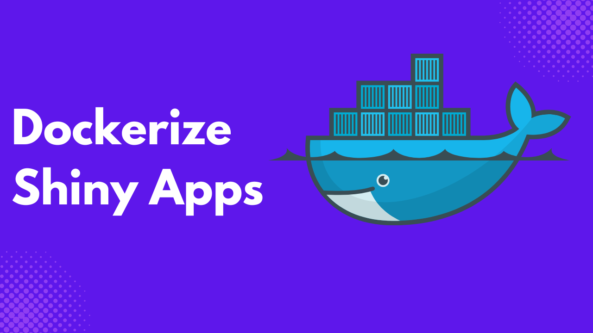
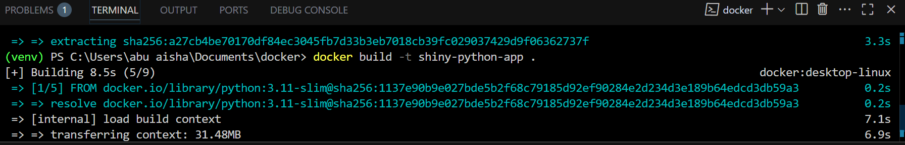

Have you ever built a Shiny application, only to watch it fail when you try running it in a different environment?
It’s frustrating, time-consuming, and, unfortunately, quite common. This is precisely the type of problem Docker was created to solve.
Although the term Docker is not new to you, understanding its potential to streamline Shiny application development and deployment is a game-changer.
You might wonder, “Why bother with Docker? Shiny applications aren’t that complex.”
True, they are not the most complicated pieces of software, but that’s not the point. The real question is: how can you make deploying your application smoother, faster, and more reliable, no matter where it runs?
When you view it from the angle of convenience and consistency, the benefits of Docker become much clearer.
Docker brings three significant advantages to the table: portability, reproducibility, and simplified deployment. With Docker, you can package your Shiny application along with all its dependencies into a single container.
This means you can run it on any system without worrying about missing packages, version mismatches, or other environmental issues. You can even switch hosting providers with minimal effort, sidestepping the pain of vendor lock-in.
To help you get started, I’ve put together this practical and straightforward guide, designed to show you step-by-step how you can package, test, and launch your Shiny application using Docker.
Prerequisites
Before proceeding, ensure you have the following ready.
Python 3.9+ installed
A sample Shiny project with the following file directory. Where
appfolder andrequirements.txtcontain your Shiny application and project dependencies, respectively.my_shiny_app/ ├── app/ │ └── app.py └── requirements.txtA sample Shiny application in your
app.pyfile, use the one below if you don’t have one.from shiny import App, render, ui app_ui = ui.page_fluid( ui.h2("Hello Shiny!"), ui.input_text("name", "Enter your name:", value="World"), ui.input_slider("n", "Number of greetings:", min=1, max=10, value=1), ui.output_text("greeting"), ) def server(input, output, session): @render.text def greeting(): return f"Hello {input.name()}! " * input.n() app = App(app_ui, server)
Step-by-Step Process
Step 1 – Create a Dockerfile
To containerize your application, you need to create a Dockerfile. This Dockerfile is what you will use to create an image.
Take your Dockerfile as the blueprint for a building, while the final product, which is the Docker Image, is the completed building.
Docker uses your Dockerfile as a step-by-step process in building your Shiny application Image.
In your project directory, create a new file Dockerfile .Then, copy and paste the code below.
FROM python:3.11-slim
WORKDIR /app
COPY requirements.txt .
RUN pip install --no-cache-dir -r requirements.txt
COPY . .
CMD ["shiny", "run", "--host", "0.0.0.0", "--port", "8000", "app.py"]Let’s break down the code above.
FROM python:3.11-sliminstructs Docker to use a Python base image with version 3.11. The-slimtag tells Docker to use a lightweight Python version.WORKDIR /appsets the working directory inside the container to/app.COPY requirements.txt .copies therequirements.txtinto the current directory within the container.RUN pip install --no-cache-dir -r requirements.txtinstalls all Python dependencies into the container. The-- no-cache-diravoids storing pip’s cache inside the image to reduce the image size.COPY . .Copies the entire local project directory into the/appdirectory in the container.CMD ["shiny", "run", "--host", "0.0.0.0", "--port", "8000", "[app.py](http://app.py/)"]sets the default command to run when the container starts on the host0.0.0.0and port8000.
Step 2 – Build the Docker Image
Use the command below to build the Docker Image.
docker build -t shiny-python-app .
If the build was successful, you should see a message similar to the following.

Step 3 – Run the Container
A Container is an instance of an Image; this implies that an Image can spawn many containers.
Run the command below to run the container.
docker run -p 8000:8000 shiny-python-appYou will see your application available at http://localhost:8000

Step 4 – Push to Docker Hub
First of all, you have to log in to Docker Hub if you are not logged in, run the command below.
docker login
If you want to push an Image to Docker Hub, you need to specify your username and the Image tag using the following format during builds; <your-user-name>/<your-app-name>:<tag>.
The tag is a label you give to various versions of your Image.
docker build -t adejumoridwan/shiny-python-app:latest .Finally, push the Image to Docker Hub.
docker push adejumoridwan/shiny-python-app:latestGo to the My Hub tab on your Docker Hub dashboard, and you should see your published Image.

Notes When Building Docker Applications
There are some points you need to take note of when building your application:
Use .dockerignore to keep your build clean
A .dockerignore is just like .gitignore. It instructs Docker not to copy the specified files into the image.
This is important because when you run docker build ., it will copy all files in your entire directory unless you explicitly exclude them.
For your Shiny application, you would want to exclude things like; __pycache__/, .pytest_cache/, .git , venv/ and so on.
Most of the above files are usually huge and can increase the size of your image.
Here is an example of a .dockerignore file.
__pycache__/
*.pyc
*.pyo
*.pyd
*.log
*.db
.venv/
.env
.git
.gitignore
Dockerfile
docker-compose.ymlUse multi-stage builds for smaller images
In multi-stage builds, you separate your build environment from the runtime environment.
In your Shiny applications, you can:
- Install dependencies, compile wheels, or build your frontend assets if you have them.
- Copy only the necessary runtime files (app code + installed dependencies) into a slimmer base image like
python:3.11-slim.
Here is an example of a multi-stage build, where the runtime Python environment is a lightweight version of the build Python environment.
# Stage 1: Build environment
FROM python:3.11 AS builder
WORKDIR /app
COPY requirements.txt .
RUN pip install --user -r requirements.txt
# Stage 2: Final runtime
FROM python:3.11-slim
WORKDIR /app
# Copy dependencies from builder
COPY --from=builder /root/.local /root/.local
# Update PATH for installed packages
ENV PATH=/root/.local/bin:$PATH
# Copy only necessary app files
COPY app.py .
# Run shiny app
CMD ["shiny", "run", "--host", "0.0.0.0", "--port", "8000", "app.py"]Ensure your app binds to 0.0.0.0 inside Docker.
By default, your Shiny application binds to 127.0.0.1 which is your localhost, but inside Docker, 127.0.0.1 means the content is only accessible inside the container, which implies your host machine won’t be able to reach it.
To make your application accessible outside your container, bind it to all interfaces, using the command below.
shiny run --host 0.0.0.0 --port 8000 app.pyConclusion
Although setting up Docker to deploy your applications may seem daunting, the effort is worth it in the long run.
Especially if your application grows and you are collaborating with others, Docker makes it easy to share the same environment without the fear of the application breaking from a collaborator’s end.
You can extend your learning by reading more on Docker Compose, a tool designed to run multiple Docker containers on a single host. This is particularly useful if your application interacts with various services, such as backends, databases, and others.
You can also read more on CI/CD integration with Shiny to avoid manually deploying your application every time you make changes.
Need Help with Data? Let’s Make It Simple.
At LearnData.xyz, we’re here to help you solve tough data challenges and make sense of your numbers. Whether you need custom data science solutions or hands-on training to upskill your team, we’ve got your back.
📧 Shoot us an email at admin@learndata.xyz—let’s chat about how we can help you make smarter decisions with your data.